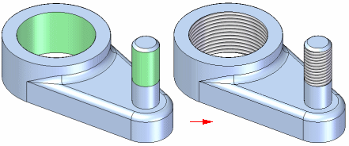

Threaded holes
You can specify a standard thread, a standard pipe thread, or a tapered pipe thread when you set the hole type to Threaded. You can also specify standard or straight pipe threads when you set the Type option to Counterbore or Countersink.
For standard threaded holes, the size of the hole in the solid model can be set to Tap drill diameter, Internal minor diameter, or Nominal diameter for the thread size selected. For example, when you construct a M24 x 1 metric threaded hole with Internal minor diameter option, the hole diameter in the solid model will be 22.917 millimeters, as this is the minor thread diameter listed for this thread in the Holes database.
A different face style is used to indicate that a hole is threaded. The Color Manager command provides an option to define the Face style for Threaded Cylinders. The default value for the Threaded Cylinder option is the Thread style. With the Thread style, you can also use the Rendering tab on the View Overrides dialog box to specify whether a photo-realistic texture is applied to threaded features in a shaded view.

You can also create physical threads by clicking the Physical Thread option  on the Hole command bar and Thread command bar.
on the Hole command bar and Thread command bar.
This option is enabled by default. There is a possible performance impact when creating thread geometry. The system administrator can disable the Physical Thread option on the SE Admin utility.
For more information, see the Threaded Features Help topic.
Learn more
Hole typesHole extents
V bottom angles
Saving commonly used hole parameters
Holes database
Look up more details
Hole Options dialog box (Simple)Hole Options dialog box (Threaded)
Hole Options dialog box (Counterbore)
Hole Options dialog box (Countersink)
Hole Options dialog box (Tapered)
Quick links
Threaded featuresRelated Topics
Hole database converterTolerance dialog box